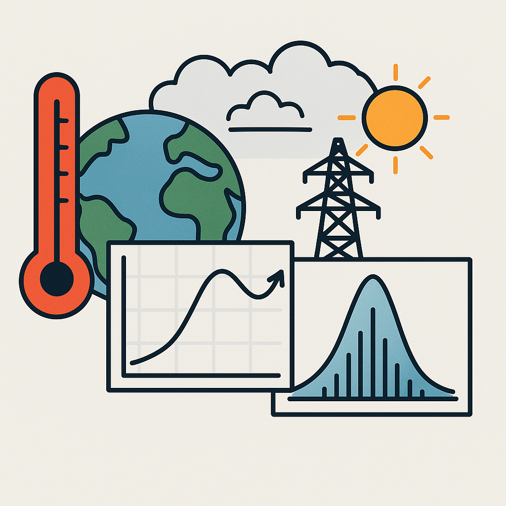

Working Papers
-
Title: Temperature Sensitivity of Residential Energy Demand on the Global Scale: A Bayesian Partial Pooling Model
Abstract: This paper contributes to the limited literature on the temperature sensitivity of residential energy demand on a global scale. Using a Bayesian partial pooling model, we estimate country-specific intercepts and slopes, focusing on non-linear temperature response functions. The results, based on data for up to 126 countries from 1978 to 2023, indicate increased demand for residential electricity and natural gas at temperatures below −5°C and higher electricity demand at temperatures above 30°C. For temperatures above 23.5°C, the relationship between power demand and temperature steepens. Demand in developed countries is more sensitive to high temperatures than in less developed countries, potentially due to unmet cooling needs in the latter.
Preprint available here .
Portfolio

Temperature Sensitivity of Residential Energy Demand
Combining aggregate Energydemand data with meteorological model outputs within a bayesian multilevel framework
Learn More